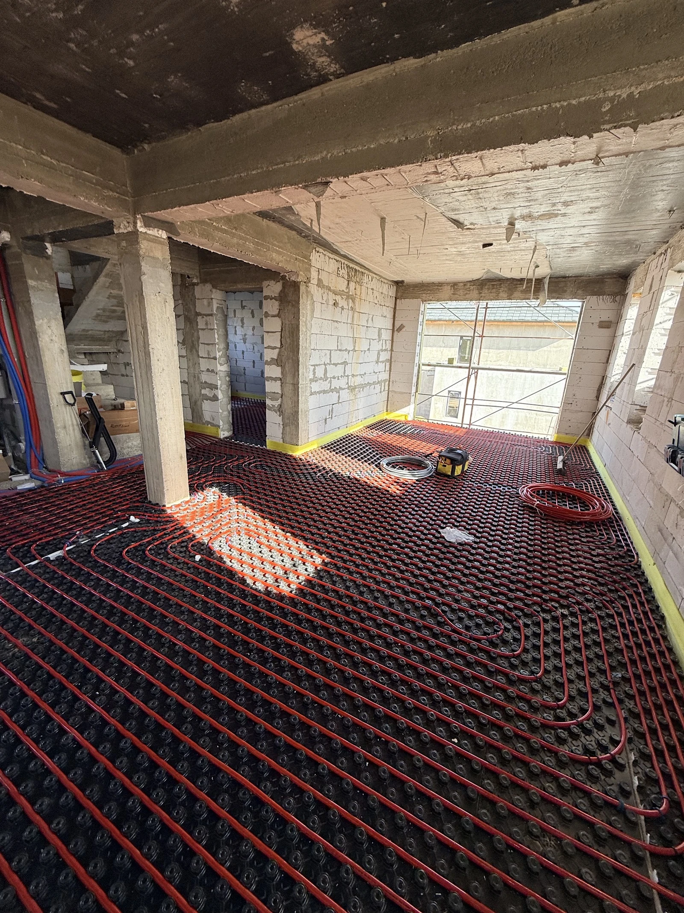
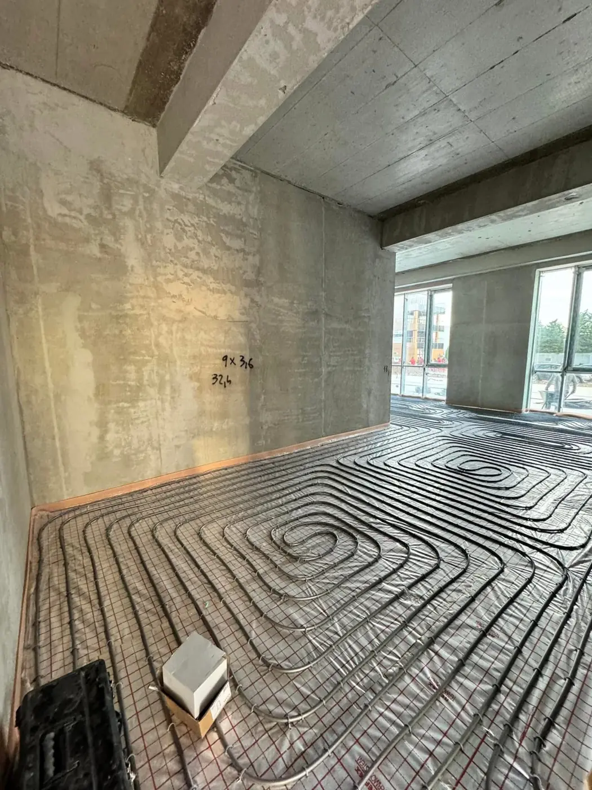

{{Încălzire în pardoseală|Underfloor heating|Piso radiante}}
{{Podeaua se încălzește din țevi.|The floor heats up from pipes.|O chão aquece a partir de tubos.}}
{{În fotografii: țevi întinse în spirale și în linii drepte, înainte de turnarea șapei, în mai multe încăperi.|In the photos: pipes laid in loops and straight runs before the screed is poured, in several rooms.|Nas fotografias: tubos em espirais e linhas retas, antes de se verter a betonilha, em várias divisões.}}
- {{Țevi roșii pe izolație|Red pipes on insulation|Tubos vermelhos sobre isolamento}}
- {{Țeavă albă pe plăci cu nopi|White pipe on studded boards|Tubo branco sobre placas de nódulos}}